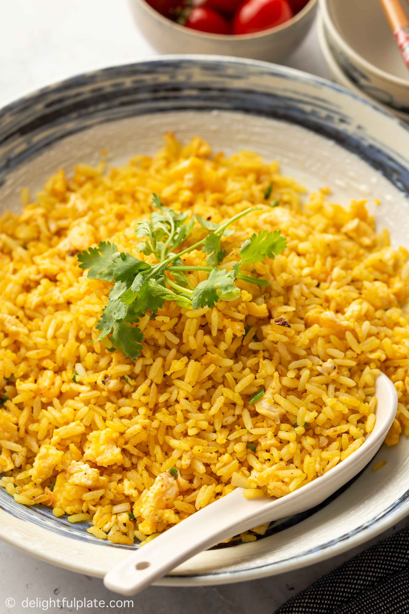

Golden Butter Rice

Golden Butter Rice
This golden butter rice, flavored with ginger and turmeric, is a forgotten way of cooking butter rice.
It isn't cooked rice with butter stirred in, it really is rice cooked in butter.
This is my favorite version, with seasonings inspired by a classic Indian drink called golden milk.
Ingredients
- 1/2 cup unsalted butter
- 1 tablespoon finely grated fresh ginger
- 1 1/4 teaspoons ground turmeric
- 1/4 teaspoon cayenne pepper
- 1 tablespoon brown sugar
- 1 teaspoon fine salt
- 2 cups basmati rice or other long grain white rice
- 3 cups water
- 1/3 cup chopped walnuts (optional)
- 1/3 cup sliced green onions (optional)
Directions
Step 1
Melt butter in a pan or pot with a tight-fitting lid over medium heat.
As soon as butter starts to bubble, add in ginger,
turmeric, cayenne, brown sugar, and salt. Cook, whisking, for 1 minute.Step 2
Add rice, and stir until every grain is coated with butter.
Stir in water, and bring to a boil over high heat.
As soon as it begins to boil,
gently shake and swirl the pan to settle rice into an even layer,
then reduce heat to medium-low.Step 3
Cover tightly and simmer for 15 minutes.
Turn off heat, and let rest, covered, for 10 minutes.
DO NOT lift the lid or try to stir yet.step 4
Now, remove the lid and use a fork to fluff and separate rice grains.
Season to taste, and serve immediately, garnished with walnuts and green onions.